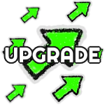
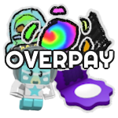
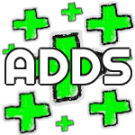

Upgrading (UP)
Upgrading is when a user trades multiple smaller value items for a lesser number of higher value ones. For example, trading two items that together have approximately the value of a sign, for a sign
would be an upgrade since you are giving 2 smaller items for a larger one. Trading 3 or 4 items for a larger one would also be considered upgrading.

Downgrading (DG)
Downgrading is simply the inverse of upgrading, in which you trade a larger item for multiple smaller ones. Let's reverse the previous exemple, if you were the one trading your star sign away for two items which values of both equal the value of your sign, you would be downgrading.
A common misconception for upgrading & downgrading is that they refer to gaining or losing value in a trade, but this is not true.

Overpay (OP)
An OP refers to giving more for an item than its average value. For example, giving two star sign + adds for an item listed at two star signs would be considered an OP
because you give more than it's actually worth.

Lowball (LB)
Simply the inverse of OP, LB refers to giving less value for an item that is listed at more. For example, giving 3 star signs for an item listed at 4 would be considered LB.

Rare
Rare items are item with only a few copies or an item that doesn't go trought the trading market a lot. A perfect exemple would be the Bee Cub or the BBM From Above.

Demand
A demand item is an item that's often put in the "Looking For" rather than the "Offering" category, this indicates that the item is desired by a lot of
people and therefore its value could potentially be manipulated to profit of the hype of the item. The perfect example for that was the Stick Cub and Stick Nymph stickers from 2024's Beesmas which value reached
absurd amounts of star signs because they were guarranted to be asked in a quest.

Adds
Adds are stickers you can add to your trade offer to balance the value of the trade if you are a bit too low compared to the one you are trading with.